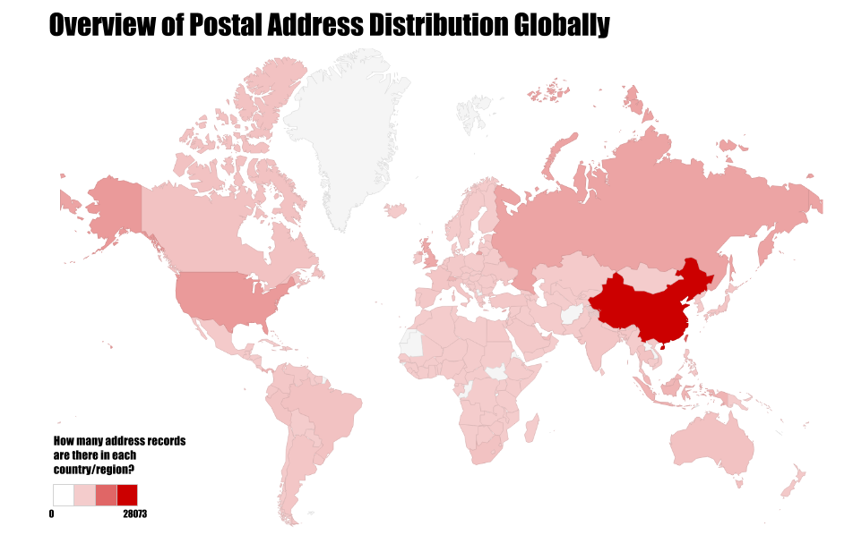
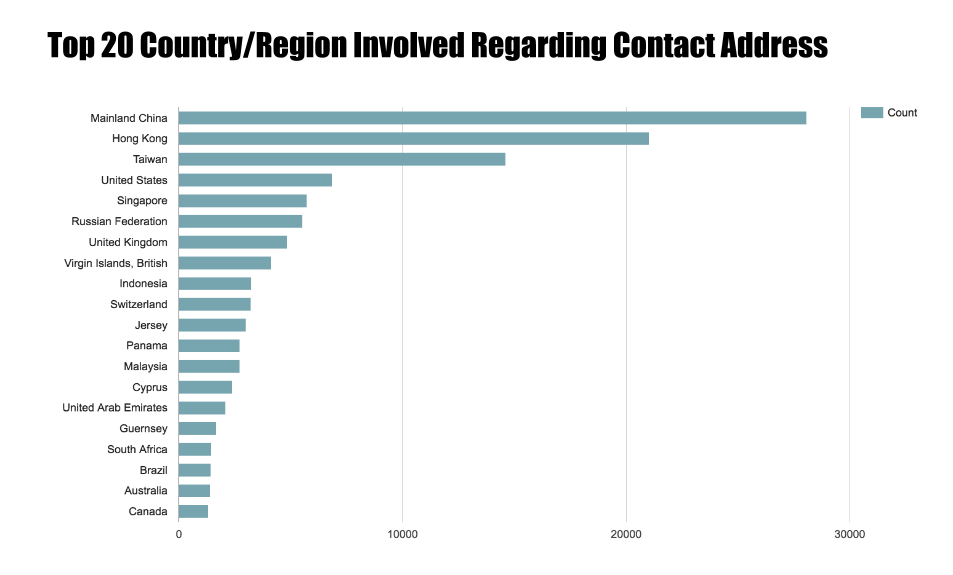
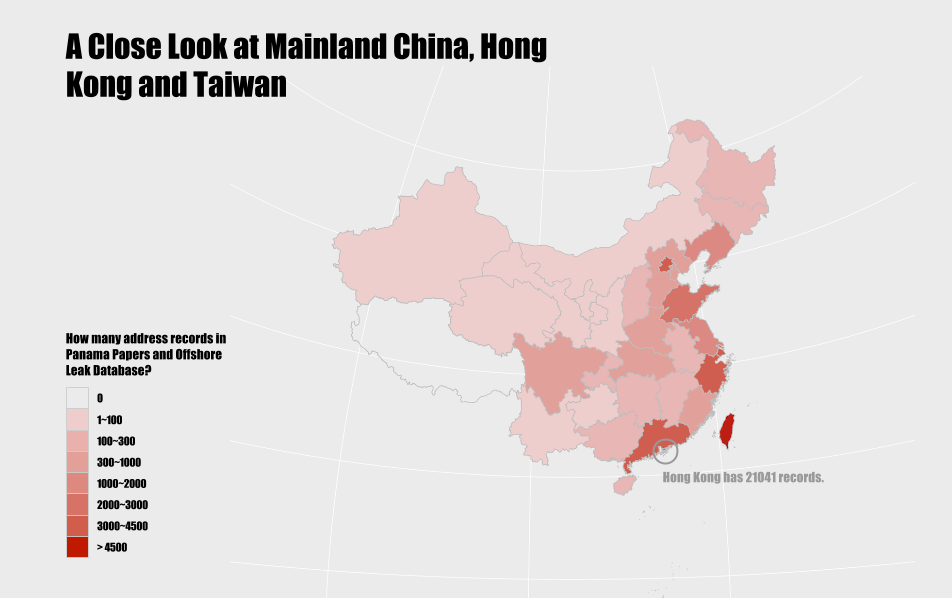

On May 9, 2016, the International Consortium of Investigative Journalists (“ICIJ” in short), a global network of journalists who collaborates on in-depth and investigative stories, released the long awaited offshore entities database behind Panama Papers Investigation.
So far, the offshore leaks database published by ICIJ includes at least 200,000 offshore entities from Panama Papers, and over 100,000 records from ICIJ’s previous investigations.
The offshore leaks database contains detailed contact postal address of all kinds of entities, offshore or non-offshore ones, officers and intermediaries, based on which we made colored maps revealing the distribution of postal address of people or companies involved in the offshore industry.
To begin with, let’s have an overview of where these companies or people are.

Global Distribution
In the world map, it is quite easy to find China who has the most address records. However, places with small sizes — for instance, most offshore juristinctions are islands — are not that obvious in such map. So, let’s try bars. Below is the top 20 country or region having most addresses in this database.

Places like Hong Kong, Singapore, Virgin Islands (British) indeed are greatly involved in the offshore leaks while they look tiny on map.
Mainland China, Hong Kong and Taiwan
Let’s zoom in a bit, to have a close look at East Asia. Statistics show, over 42% of all addresses in Panama Papers and Offshore Leaks are in Mainland China, Hong Kong and Taiwan. The following map shows the distribution. Coastal areas, as the map shows, have more connections with entities, people and intermediaries in the offshore industry.

Steps in Drawing the Map
The Panama Papers and Offshore Leaks database published by ICIJ provide structred and friendly address data and this is our starting point. With the help of Google Spreadsheets, Google Drawings, it is convenient to produce the world map and the barchart as shown above. However, since the address data are country/region level ones, in order to draw a provincial distribution map of Mainland China, we need to pay more efforts to extract provincial/municipal information from postal addresses in plain text.
1. Get the list of cities and provinces in China from wikipedia
There is a html table which has both the names of cities and their according provinces in List of cities in China. We can simply copy and paste the table into a text file and extract lower case format of the city names and province names use a bash command:
1 | cat list_of_cities_table.txt | cut -f1 -f3 | tr '[:upper:]' '[:lower:]' | sed -e "s/[[:space:]]/,/g" > city_province.csv |
Be noted that manual work is inevitable. For example, we need to specifically assign a ID in the province columns for municipals (we use the city name itself as ID). we also changed Inner Mongolia into mongolia because it is much easier to do word level matching after text segmentation. The ultimate CSV city_province.csv file is in the following format:
cities,provinces/municipal
zunyi, guizhou
zhoushan, zhejiang
zhuhai, guangdong
shanghai, shanghai
beijing, beijing
2. Data cleaning and massage of the Addresses.csv file
In order to match between Addresses.csv and city_provinces.csv. The tm package in R is used to remove noises - including punctuation, numbers, whitespaces, etc - from the address data:
1 | library(tm) |
Then, we splitted the addresses into vectors of words. For instance, the address “jishanquiao shaoxing zhejiang postcode 31200 china” will be changed into c("jishanquiao", "shaoxing", "zhejiang", "postcode", "31200", "china"):
1 | addrwords <- lapply(addresses, function(x)strsplit(x, " ")) |
3. Mapping addresses to their cities and provinces
After the above steps, we can already obtain relevant cities or provinces using simple vector intersect operations:
1 | library(dplyr) |
At this stage, we will get a large amount of province information for those addresses.
4. Mapping cities to their provinces
However, not all addresses are well formatted. Some addresses only contain information at the level of cities. Fortunately, we can retrieve the province given a city name.
1 | cities <- unique(df.area$V1) |
5. Fuzzy matching for misspelled addresses
What if zhejiang, as a province name, is misspelled into zhe jiang or zhejing? Fuzzy matching helps. We can implement a simple fuzzy matching function using the stringr and stringdist package.
1 | fuzzy.province <- function(addrwords, provinces, dist = 0) { |
6. Draw the Map
After several iterations of data cleaning. We got around 96% of the total addresses in CHN section annotated with province information (There are a total number of 28073 CHN addresses, 27069 of them annotated; 100 rows for duplication because of ambiguous city names).
At this point, we are ready to draw a map! R code attached:
library(maptools)
library(dplyr)
library(plyr)
library(ggplot2)
library(scales)
# GIS file for China, stores the feature geometry
cnmap <- readShapePoly("bou2_4p.shp")
prov_cn <- unique(cnmap$NAME)
prov_cn <- prov_cn[!is.na(prov_cn)]
prov_en <- c("heilongjiang", "mongolia", "xinjiang", "jilin",
"liaoning", "gansu", "hebei", "beijing", "shanxi",
"tianjin", "shaanxi", "ningxia", "qinghai", "shandong",
"tibet", "henan", "jiangsu", "anhui", "sichuan", "hubei",
"chongqing", "shanghai", "zhejiang", "hunan", "jiangxi",
"yunnan", "guizhou", "fujian", "guangxi", "taiwan",
"guangdong", "hongkong", "hainan")
prov <- data.frame(prov_cn, prov_en)
id_prov <- cnmap@data %>%
mutate(prov_en = sapply(NAME,
function(x)
prov_en[which(prov_cn == x)])) %>%
mutate(prov_cn = as.character(NAME),
prov_en = as.character(prov_en))
id <- rownames(id_prov)
id_prov <- cbind(id=id, id_prov)
id_prov <- id_prov %>% select (id, prov_cn, prov_en)
cnmapdf <- plyr::join(fortify(cnmap), id_prov, by = "id")
# AddressCNFinal.csv is the ultimate file after data cleaning and data massage
df.addr <- read.csv("AddressCNFinal.csv")
df.addr <- df.addr[df.addr$province!="", ]
df.addr <- count(df.addr, "province")
df.addr$prov_en <- df.addr$province
map2df <- cnmapdf %>%
plyr::join(df.addr, by = "prov_en") %>%
mutate(freq = as.numeric(freq))
# We put the count of addresses for each province/ municipal into 7 buckets
map2df$brks <- cut(map2df$freq,
breaks=c(0, 100, 300, 1000, 2000, 3000, 4500, 25000),
labels=c('1-100', '100-300', '300-1000', '1000-2000', '2000-3000', '3000-4500', '>4500'))
cbbPalette <- c('#efcdcd', '#e9b6b3', '#e3a099', '#dd8980', '#d77366', '#d15d4c', '#bf1a00')
map <- map2df %>%
ggplot(aes(x = long, y = lat, group = group, fill=brks)) +
geom_polygon(color = "grey") +
scale_fill_manual(values=cbbPalette) +
coord_map("polyconic")
Examine the result
The first glance of the map gives us an impression that the addresses in CHN segment of the offshore leak databases are mainly located near the coast, e.g. beijing, zhejiang, guangdong, shanghai, jiangsu, liaoning and fujian.
As we have already mentioned, the addresses in Addresses.csv are not well formatted. There are certain cases we have not handled in the data cleaning process. e.g. some addresses adopts Nei Meng or neimenggu instead of Inner Mongolia; shanxi and shaanxi can be used interchangeably; Many addresses contain neither city nor province information. Moreover, the mining process focused solely on Addresses.csv which does not contain any characteristical information of the addresses.
So this article is only a simple demonstration of how we can play with textual data. Nonetheless, it already incorporates the main data analysis steps including data collection, cleaning, exploration and visualization.